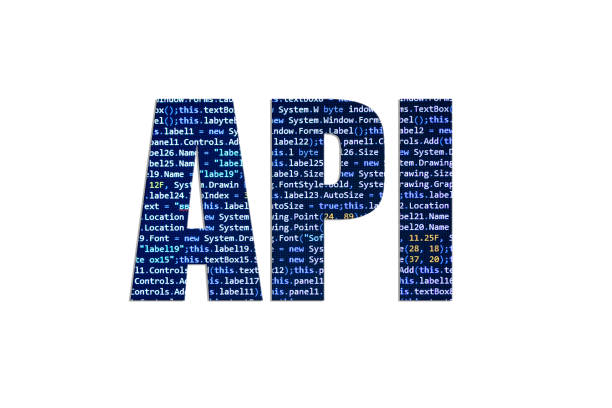
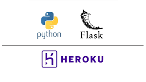
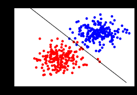
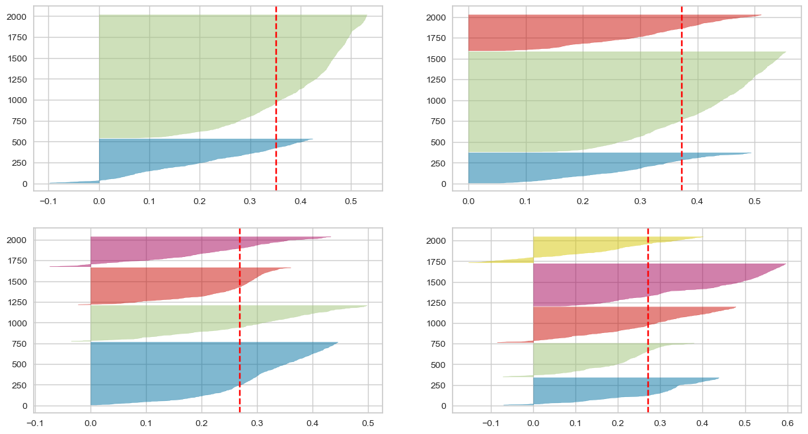

In this project, Python Jupyter Notebook used to clean and manipulate a dataset downloaded from 'Our World in Data' website. Subsets of data were generated and used to construct a SQL database which then utilized to create dataset of monthly aggregated dataset of cases that eventually was used to create visualization in Tableau Software.

In this project, Beautiful Soup Python library was used to scrap data from Amazon website.The result was converted to a Pandas dataframe and saved as csv file.
Scrapy is a fast high-level web crawling and web scraping framework. In this project, Scrapy was used to scrap data from Amazon website.

Walgreen website provides an API which can be used to scrape the data without no need for JavaScript rendering service tools such as Splash or Selenium. In this project, web scraping of Walgreen website was performed utilizing the API and Postman.

Aggregated Covid-19 data from all countries was used to construct interactive Tableau Dashboard.

Xgboost algorithm was used to build a regression model to predict the medical cost. A Flask app was constructed and deployed on Heroku
Machine learing regression model was developed and deployed as a Flask app on Heroku through Github Actions
Machine learing regression model was developed and deployed as a Flask app on AWS through Github Actions
In this project, classification machine learning model was developed after testing different approaches of balancing the data

This project involved building an optimized machine learning model to predict diabetes.

In this project, cluster-ability of Consumer Segmentation Data was tested using original data and data subjected to dimensionality reduction using Principal component analysis (PCA)